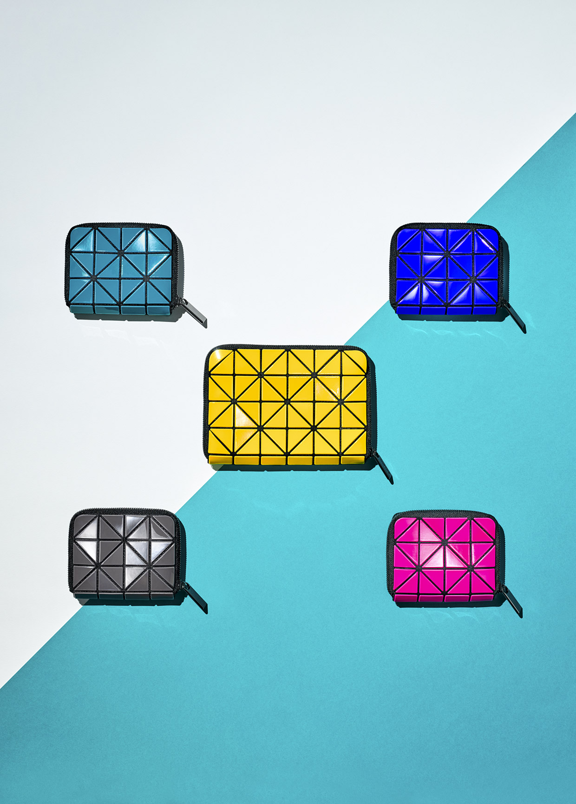
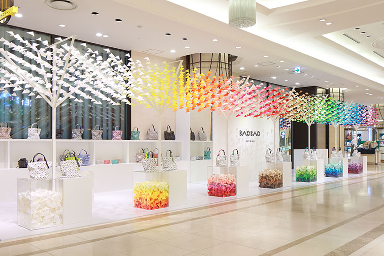
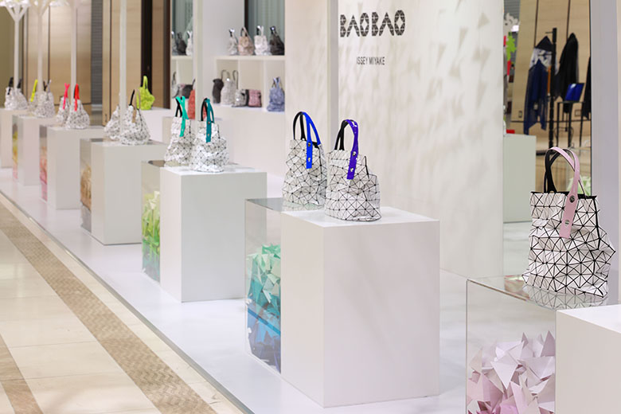
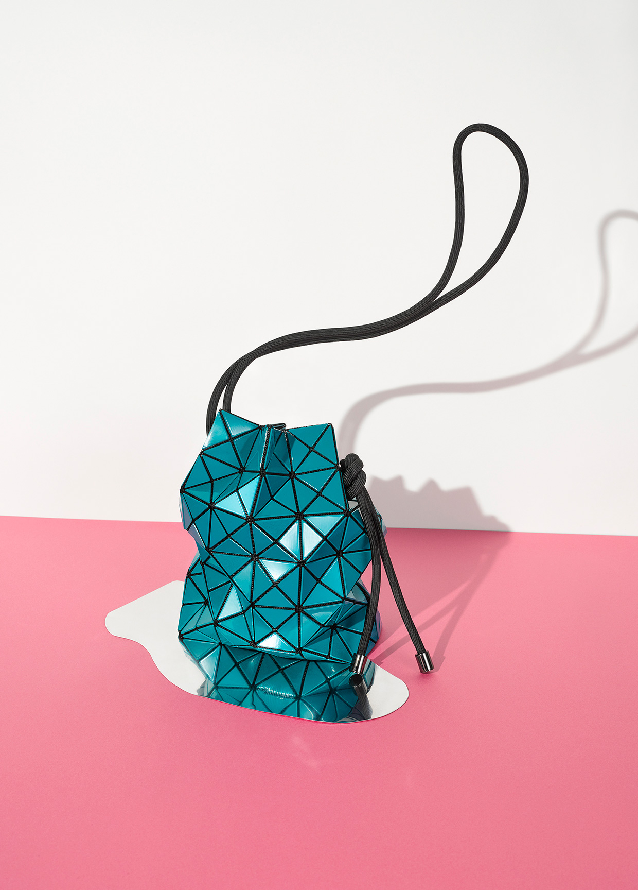
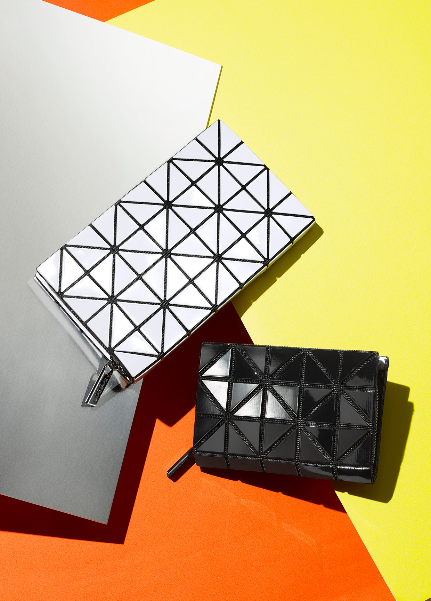

CORPORATE
SINCE
1970
-
1971
ISSEY MIYAKE INTERNATIONAL INC. (now ISSEY MIYAKE INC.) established as a manufacturing, wholesale and retail company.
-
1974
First ISSEY MIYAKE store opened in the Puzzle Aoyama Building in Gaienmae, Tokyo
-
1975
First overseas ISSEY MIYAKE store opened in Place du Marche Saint-Honore, Paris
-
1976
ISSEY MIYAKE store opened in From-1st building in Minami-Aoyama, Tokyo in Place du Marche Saint-Honore, Paris ISSEY MIYAKE MEN launched
-
1979
Group subsidiary ISSEY MIYAKE EUROPE S.A. established in Paris


SINCE
1980
-
1981
Plantation (now a brand belonging to A-net Inc.) launched
-
1982
Group subsidiary ISSEY MIYAKE U.S.A. CORP. established in New York
-
1983
Group subsidiary ISSEY MIYAKE U.K. LTD. (now ISSEY MIYAKE LONDON LTD.) established in London ISSEY MIYAKE MEN store opened in Minami-Aoyama, Tokyo
-
1985
ISSEY MIYAKE MEN begins showing in the Paris Collection from the AUTUMN WINTER 1985 season.
-
1987
ISSEY MIYAKE MEN store reopened in a new location in Minami-Aoyama, Tokyo (now ISSEY MIYAKE MEN / AOYAMA)


SINCE
1990
-
1990
ISSEY MIYAKE INTERNATIONAL INC. renamed as ISSEY MIYAKE INC.
-
1992
First fragrance L'EAU D'ISSEY launched through a collaboration between MIYAKE DESIGN STUDIO and BPI (France)
-
1993
ISSEY MIYAKE store reopened in a new location in Minami-Aoyama, Tokyo (now ISSEY MIYAKE / AOYAMA)
-
1994
PLEATS PLEASE ISSEY MIYAKE launched
-
1996
First overseas PLEATS PLEASE ISSEY MIYAKE store opened in Boulevard Saint-Germain, Paris (current store) Group subsidiary A-net Inc. established
-
1998
PLEATS PLEASE ISSEY MIYAKE store opened on Prince Street in New York ISSEY MIYAKE MEN shows moved to Milan from the SPRING SUMMER 1999 collection
-
1999
Naoki Takizawa becomes creative director of ISSEY MIYAKE from the SPRING SUMMER 2000 collection (AUTUMN WINTER 2000 - SPRING SUMMER 2007)
-
2000
A-POC launched me ISSEY MIYAKE launched HaaT launched, Makiko Minagawa becomes total director (from AUTUMN WINTER 2000)
-
2001
HaaT store opened in Minami-Aoyama, Tokyo (now HaaT / AOYAMA) tribeca ISSEY MIYAKE store opened in Tribeca, New York ISSEY MIYAKE WATCH launched through a collaboration between SEIKO (Japan) and MIYAKE DESIGN STUDIO
-
2005
ISSEY MIYAKE MEN shows moved to Paris from the AUTUMN WINTER 2005 collection
SINCE
2000
-
2007
Dai Fujiwara becomes creative director of ISSEY MIYAKE from AUTUMN WINTER 2007 collection (AUTUMN WINTER 2007 - AUTUMN WINTER 2011) PLEATS PLEASE ISSEY MIYAKE / ROPPONGI store opened in Roppongi, Tokyo ELTTOB TEP ISSEY MIYAKE / SEMBA store opened in Minami-Semba, Osaka A-POC becomes part of ISSEY MIYAKE, as the A-POC INSIDE design solution PLEATS PLEASE ISSEY MIYAKE store opened in Minami-Aoyama, Tokyo (now PLEATS PLEASE ISSEY MIYAKE / AOYAMA) ISSEY MIYAKE / KOBE store opened in Kobe
-
2008
ISSEY MIYAKE store opened on Rue Royale in Paris
SINCE
2010
-
2010
BAO BAO ISSEY MIYAKE launched 132 5. ISSEY MIYAKE launched
-
2011
ELTTOB TEP ISSEY MIYAKE / GINZA store opened in Ginza, Tokyo Yoshiyuki Miyamae becomes designer for ISSEY MIYAKE from the SPRING SUMMER 2012 collection (SPRING SUMMER 2012 - present)


-
2012
IN-EI ISSEY MIYAKE launched through a collaboration between MIYAKE DESIGN STUDIO and Artemide (Italy)
-
2013
ISSEY MIYAKE and ISSEY MIYAKE MEN stores opened in Minami-Semba, Osaka Yusuke Takahashi becomes designer for ISSEY MIYAKE MEN from the SPRING SUMMER 2014 collection (SPRING SUMMER 2014 - present) ISSEY MIYAKE Group co-organized a performance by the Aomori University Men's Rhythmic Gymnastics Team at Yoyogi National Gymnasium Building 2 REALITY LAB. ISSEY MIYAKE store opened in the From-1st Building in Minami-Aoyama, Tokyo HOMME PLISSÉ ISSEY MIYAKE launched
-
2014
ISSEY MIYAKE store opened at 10 Brook Street in London
-
2015
ISSEY MIYAKE MARUNOUCHI store opened in Marunouchi, Tokyo ISSEY MIYAKE EYES launched through a collaboration between MIYAKE DESIGN STUDIO and Kaneko Optical (Japan)
-
2016
me ISSEY MIYAKE store reopened in a new location in Minami-Aoyama, Tokyo ISSEY MIYAKE Group co-organized MIYAKE ISSEY Exhibition: The Work of Miyake Issey at the National Art Center, Tokyo HOMME PLISSÉ ISSEY MIYAKE / DAIKANYAMA store opened in Daikanyama, Tokyo
-
2017
ISSEY MIYAKE store opened in Munsterhof town square in Zurich ISSEY MIYAKE store opened on Via Bagutta, Milan ISSEY MIYAKE GINZA / URA store opened in Ginza, Tokyo ISSEY MIYAKE GINZA / OMOTE store opened in Ginza, Tokyo
-
2018
ISSEY MIYAKE KYOTO store opened on Yanaginobanba-dori, Kyoto ISSEY MIYAKE store opened at 33 Brook Street in London GOOD GOODS ISSEY MIYAKE / DAIKANYAMA store opened in Daikanyama, Tokyo

© ISSEY MIYAKE INC.